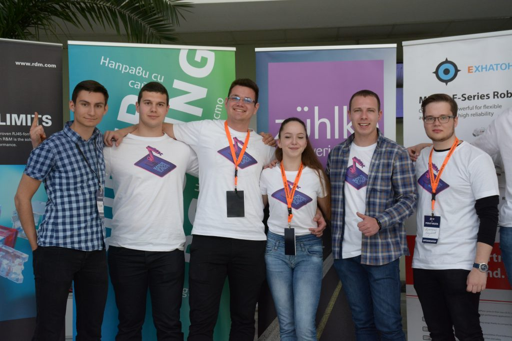

One of The Top 3 Universities in Bulgaria
The Branch as such is an affiliated structure of Technical University - Sofia, providing training in Bachelor's, Master's and Doctor's degree courses affirmed by the Council of Ministers. The Branch has contemporary facilities including modern lecture halls and laboratories, an up-to-date library with over 100000 volumes of educational and specialized technical literature, canteens and a student hostel.
EXPLORE NOW

About Us
Technical University - Sofia, Plovdiv Branch,
25 Tsanko Diustabanov St.
Plovdiv, 4000, Bulgaria
tel: +359 32 659 558
fax: +359 32 626 886
e-mail: branch@tu-plovdiv.bg